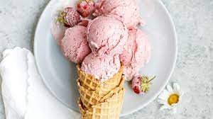

Strawberry Gelato

Description
Gelato, meaning "frozen", is a type of
traditional Italian ice cream. This recipe is just that, but with
a nice strawberry flavor.
Ingredients
- 3 cups strawberries
- 4 cups whole milk
- 1&1/3 cups sugar
- 12 beaten egg yolks
Steps
- Place the strawberries in a blender and blend until smooth
- In a large saucepan combine milk, sugar, and egg yolks.
Cook and stir over medium heat until the mixture just coats
a metal spoon. Combine with strawberries and remove from the heat
- Cover surface of mixture with plastic wrap. Chill several hours
or overnight until completely chilled
- Freeze mixture in an ice cream freezer
- Bon Appetit!